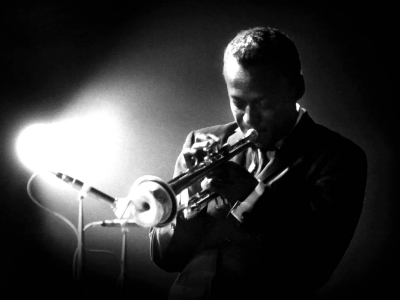

Who was Miles Davis?
Instrumental in the development of jazz, Miles Davis is considered one of the top musicians of his era. Born in Illinois in 1926, he traveled at age 18 to New York City to pursue music.
Throughout his life, he was at the helm of a changing concept of jazz. Winner of eight Grammy awards, Miles Davis died in 1991 from respiratory distress in Santa Monica, California.
Starting Out
Davis grew up in East St. Louis, Ill., where his father was a prosperous dental surgeon. (In later years he often spoke of his comfortable upbringing, sometimes to rebuke critics who assumed that a background of poverty and suffering was common to all great jazz artists.) He began studying trumpet in his early teens; fortuitously, in light of his later stylistic development, his first teacher advised him to play without vibrato. Davis played with jazz bands in the St. Louis area before moving to New York City in 1944 to study at the Institute of Musical Art (now the Juilliard School)—although he skipped many classes and instead was schooled through jam sessions with masters such as Dizzy Gillespie and Charlie Parker. Davis and Parker recorded together often during the years 1945–48.
Davis’s early playing was sometimes tentative and not always fully in tune, but his unique, intimate tone and his fertile musical imagination outweighed his technical shortcomings. By the early 1950s Davis had turned his limitations into considerable assets. Rather than emulate the busy, wailing style of such bebop pioneers as Gillespie, Davis explored the trumpet’s middle register, experimenting with harmonies and rhythms and varying the phrasing of his improvisations. With the occasional exception of multinote flurries, his melodic style was direct and unornamented, based on quarter notes and rich with inflections. The deliberation, pacing, and lyricism in his improvisations are striking.
Cool Jazz
In the summer of 1948, Davis formed a nonet that included the renowned jazz artists Gerry Mulligan, J.J. Johnson, Kenny Clarke, and Lee Konitz, as well as players on French horn and tuba, instruments rarely heard in a jazz context. Mulligan, Gil Evans, and pianist John Lewis did most of the band’s arrangements, which juxtaposed the flexible, improvisatory nature of bebop with a thickly textured orchestral sound. The group was short-lived but during its brief history recorded a dozen tracks that were originally released as singles (1949–50). These recordings changed the course of modern jazz and paved the way for the West Coast styles of the 1950s. The tracks were later collected in the album Birth of the Cool (1957).
During the early 1950s Davis struggled with a drug addiction that affected his playing, yet he still managed to record albums that rank among his best, including several with such jazz notables as Sonny Rollins, Milt Jackson, and Thelonious Monk. In 1954, having overcome the addiction, Davis embarked on a two-decade period during which he was considered the most innovative musician in jazz. He formed classic small groups in the 1950s that featured saxophone legends John Coltrane and Cannonball Adderley, pianists Red Garland and Bill Evans, bassist Paul Chambers, and drummers “Philly” Joe Jones and Jimmy Cobb. Davis’s albums recorded during this era, including ’Round About Midnight (1956), Workin’ (1956), Steamin’ (1956), Relaxin’ (1956), and Milestones (1958), affected the work of numerous other artists. He capped this period of his career with Kind of Blue (1959), perhaps the most celebrated album in the history of jazz. A mellow, relaxed collection, the album includes the finest recorded examples of modal jazz, a style in which improvisations are based upon sparse chords and nonstandard scales rather than on complex, frequently changing chords. The modal style lends itself to solos that are focused on melody; this accessible quality ensured Kind of Blue’s popularity with jazz fans.
Released concurrently with the small-group recordings, Davis’s albums with pieces arranged and conducted by Gil Evans—Miles Ahead (1957), Porgy and Bess (1958), and Sketches of Spain (1960)—were also monuments of the genre. The Davis-Evans collaborations were marked by complex arrangements, a near-equal emphasis on orchestra and soloist, and some of Davis’s most soulful and emotionally powerful playing. Davis and Evans occasionally collaborated in later years, but never again so memorably as on these three masterful albums.
Death and Legacy
Honoring his body of work, in 1990, Miles Davis received a Lifetime Achievement Grammy Award. In 1991, he played with Quincy Jones at the Montreux Jazz Festival. The two performed a retrospective of Davis's early work, some of which he had not played in public for more than 20 years.
Later that same year, on September 28, 1991, Davis succumbed to pneumonia and respiratory failure, dying at the age of 65.
Fittingly, his recording with Quincy Jones would bring Miles Davis his final Grammy, awarded posthumously in 1993. The honor was just another testament to the musician's profound and lasting influence on jazz.